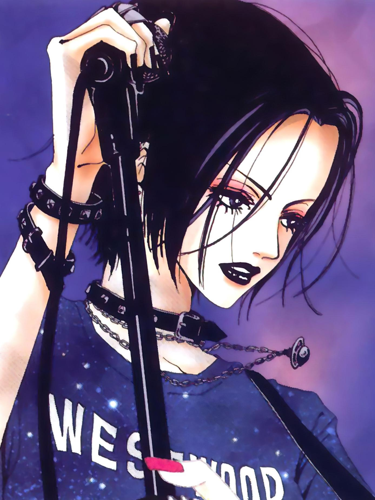

El popular usuario de Twitter “Manga Mogura (@MangaMogura)” compartió una actualización señalando que es posible que el manga escrito e ilustrado por Ai Yazawa, Nana, tenga algún anuncio que dar próximamente. La información no es una filtración, y se basa principalmente en que el manga ha tenido muchos movimientos comerciales en los últimos meses, como una próxima entrevista, exhibiciones y el anuncio de reimpresiones de volúmenes en múltiples países.
Yazawa comenzó la publicación del manga a través de la revista Cookie de la editorial Shueisha en mayo del año 2000, y entró en una pausa indefinida en mayo de 2009, que a la fecha aún persiste. Hasta ese punto, la editorial publicó un total de veintiún volúmenes recopilatorios, y la obra inspiró una adaptación al anime de 47 episodios producida por los estudios Madhouse y estrenada en abril de 2006 en Japón, seguida de dos películas live-action en 2005 y 2006.
Sinopsis de Nana
Partiendo de sus respectivas ciudades natales, dos jóvenes con nombres idénticos se unen en su búsqueda de nuevos comienzos. Con el corazón puesto en ir a Tokio, Nana Komatsu sueña con un amor feliz, mientras que Nana Osaki aspira a tener una carrera musical exitosa. La primera tiene un carácter alegre y amistoso, pero su ingenuidad ha desviado su vida romántica hasta que conoce a su fiable novio-Shouji Endo. Sin dejarse abatir por la decisión de Shouji de estudiar en Tokio, Nana trabaja duro para ganar suficiente dinero y seguirle hasta allí.
Mientras tanto, su tocaya es una solitaria vocalista de punk cuyo apasionado romance con el bajista de su banda, Ren Honjou, llega a un repentino final. Aunque con el corazón roto, Nana mira con valentía hacia adelante y viaja a la capital con la ambición de convertirse en una artista reconocida. Poco después de llegar a Tokio, las chicas vuelven a cruzar sus caminos debido a una inesperada coincidencia que las lleva a vivir bajo el mismo techo. A medida que se acercan, las dos se esfuerzan por apoyarse mutuamente en su lucha por forjarse un futuro.